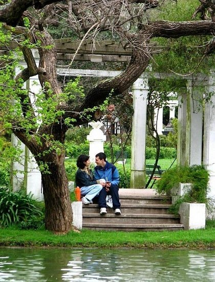
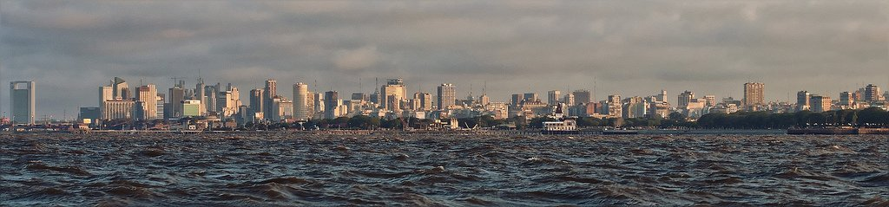
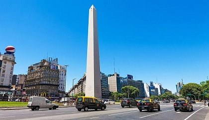

Буэнос-Айрес — столица Аргентины и один из самых красивых городов Южной Америки с населением 2,89 млн человек. Он расположен на расстоянии 275 км от Атлантического океана в хорошо защищенной бухте залива Ла-Плата, на правом берегу реки Риачуэло. Название города означает «попутные ветра», или в дословном переводе с испанского языка «хороший воздух». Буэнос-Айрес славится большим количеством культурных достопримечательностей, а также является отправной точкой для путешествий по всей стране.
 Жители Буэнос-Айреса называют себя портенос (porteños) – «люди из порта», подразумевая, что многие являются в некотором роде иммигрантами. Буэнос-Айрес – это особое, открытое место, что позволяет туристами не только осмотреть город, но также получить исключительное впечатление от прогулок по нему. Буэнос-Айрес состоит из 48 кварталов. Самые старые городские районы именовались в честь католических приходов, а названия более современных «барриос» посвящены известным людям, повлиявшим на оставившими развитие аргентинской столицы.
Как и полагается мегаполису, Буэнос-Айрес постоянно растет. На сегодняшний день агломерацию, охватывающую обширные столичные пригороды, населяет 14,6 млн человек. В состав большого Буэнос-Айреса входят 18 пригородов, общей площадью 3646 км². По индексу уровня глобализации город занимает первое место в Южной Америке.
Благодаря мягкому климату, у путешественников есть возможность с комфортом провести время в столице Аргентины в любое время года. Те, кто предпочитает наслаждаться теплыми днями, выбирают период с сентября по апрель, когда средняя температура, к примеру, в январе составляет +24 °C. Туристы, которым больше нравится бодрящая прохлада, приезжают в Буэнос-Айрес с июня по август. Средняя температура воздуха в июле держится на отметке +10 °C. Количество осадков на территории города составляет 987 мм в год.
Буэнос-Айрес по праву считается городом контрастов и самым европеизированным поселением Южной Америки. Старые испанские кварталы в нем соседствуют с высокими небоскребами, а трущобы бедняков – с фешенебельными районами центра и стильной застройкой пригородов. Город богат зелеными парками, бульварами, историческими и архитектурными памятниками. 
Архитектура Буэнос-Айреса — это история его жителей. Многие из них являются потомками иммигрантов из различных культур, которые нашли своё отражение в архитектуре города. Старая часть аргентинской столицы одновременно похожа на Барселону, Париж и Мадрид. А новые кварталы города примечательны тем, что здесь сосредоточены банки, офисы крупных компаний и бизнес-центры. Тем не менее, Буэнос-Айресу присуща единая планировка, в которой сохранены традиции колониальной застройки. Площадь Сан-Мартина, главная в городе, выходит в сторону залива, а улицы имеют прямолинейную конфигурацию.